Designed from scratch - a platform that helps Toronto families find rentals within their chosen school's catchment area faster.
Toronto families with school-aged children aim to rent within the catchment area of a high-performing school - making school quality a primary factor in their housing decision.
Significant time (sometimes days) spent finding the right rental, switching between school board sites, rating platforms, and rental listings.
A platform that reduces fragmented research across multiple sources to a several-minute search with a high level of confidence.
I ran into this myself - looking for a rental that worked for my family while also landing in the right school catchment for my child. It took me several days just to piece the information together across multiple platforms.
You’re a parent with a 4-year-old who just moved to Toronto.
Your kid needs to start school soon, but you find out – you can’t just pick any school. Your child has to go to a school within a specific catchment area.
You’re still looking for a permanent rental, so you have time to prioritize finding the right school first.
But where do you even start?
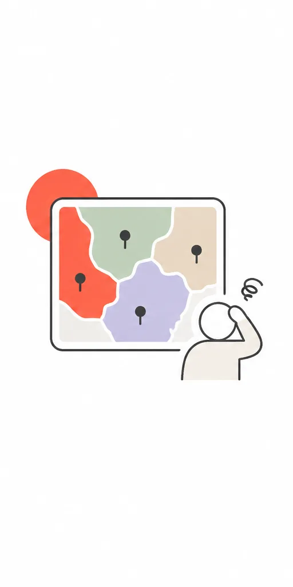
District school boards websites show catchment areas
but...
Do you have a scanner in your eye to memorize them?
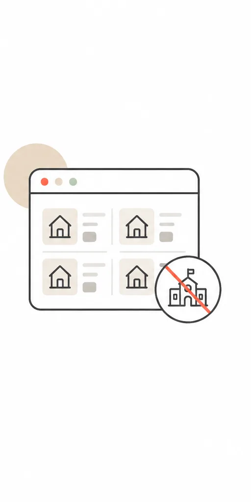
Rental websites show lots of rental options
but...
They don’t consider the schools quality factor
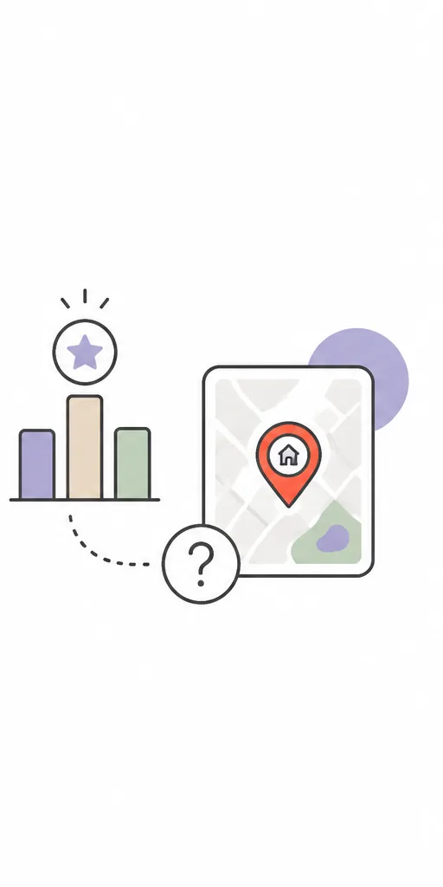
The Fraser Institute ranks schools, so you know the best ones exist
but...
How do you find a rental near them?
After I realised the problem and before diving into the design, I needed to check: is this a real and widespread problem that other parents in the Greater Toronto Area face - or just my own experience?
39%
of Canadians cite schools or school districts as an important factor in choosing a home. Zoocasa, 2024
Hey Reddit, have you heard of something similar?
The problem seemed real. I continued my research by running 1:1 interviews - friends with school-aged children in Toronto, Oakville, and Mississauga, and parents from my child's daycare group (12 conversations in total). 10 out of 12 dealing with the same problem.
Which pain points do they mention:
Jumping between the websites
Rentals and the school catchment info live on a different platforms
Proximity ≠ assigned
Rental websites show "nearby" schools, not your actual catchment area schools
French options are separated
French Immersion boundaries are listed separately from the regular schools
Realtors mislead
Agents sometimes give wrong catchment information
Catchment ≠ spot
Schools are full - being inside doesn’t guarantee a place
Condos excluded
Some condo buildings are carved out of their local catchment
Ratings biased
Fraser underrates newcomer-heavy schools when assessing the academic performance
With that in mind I have chosen 1 main type of the user persona to consider while making the design decisions. Here she is

When I open the site, I want to see rental options within the confirmed catchment areas of well-rated Toronto schools, with enough context about what those ratings actually mean and what the neighbourhood is like, so I can make a confident decision without spending days switching between tabs, drawing my own maps, or risking renting just outside the right boundary.
After analyzing the major pain points, I identified the core value for the MVP - just enough features to address the major frustrations - leaving the rest to future iterations.
To deliver value faster, I defined the following design constraints:
I quickly sketched the ideas of the possible solutions with 2 major concepts - map-first and filter first.
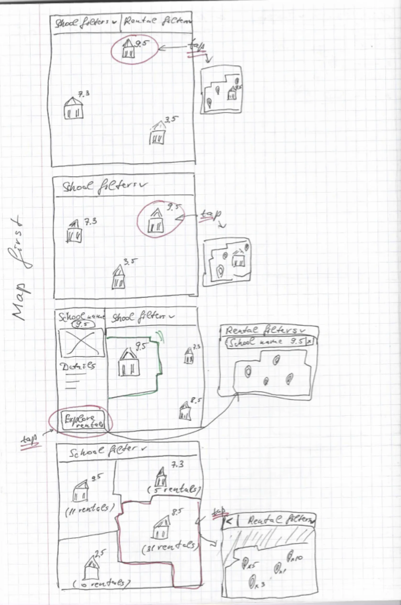
Map first - full-screen map, scored school markers, catchment boundary drawn on tap, school detail panel, rental handoff. A variation showed rental count per catchment zone, combining supply and quality in one view.
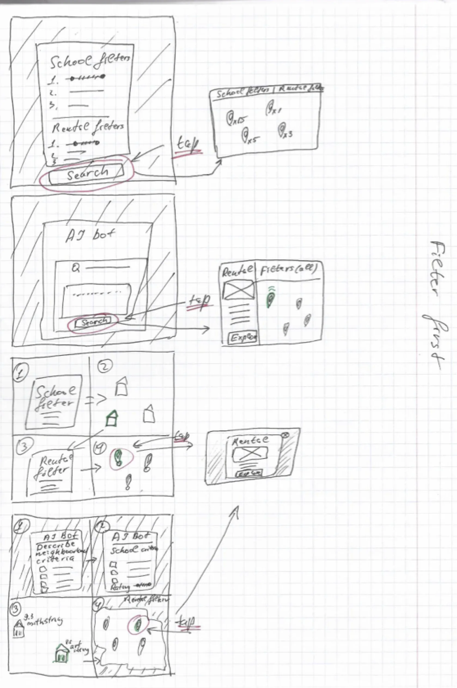
Filter first - explored as a form, a wizard, and an AI bot. The AI bot variant - letting Michelle describe neighbourhood criteria in natural language - showed the most promise for a newcomer unfamiliar with Toronto.
I decided to proceed with the already familiar map-based interface that users could easily recognise - applying Jakob's Law. Local rental apps like Zillow or Realtor.ca had already set that mental model.
1st design iteration with Claude Code. I started with the filter-first approach - when you open the app, you define your criteria before seeing anything on the map.
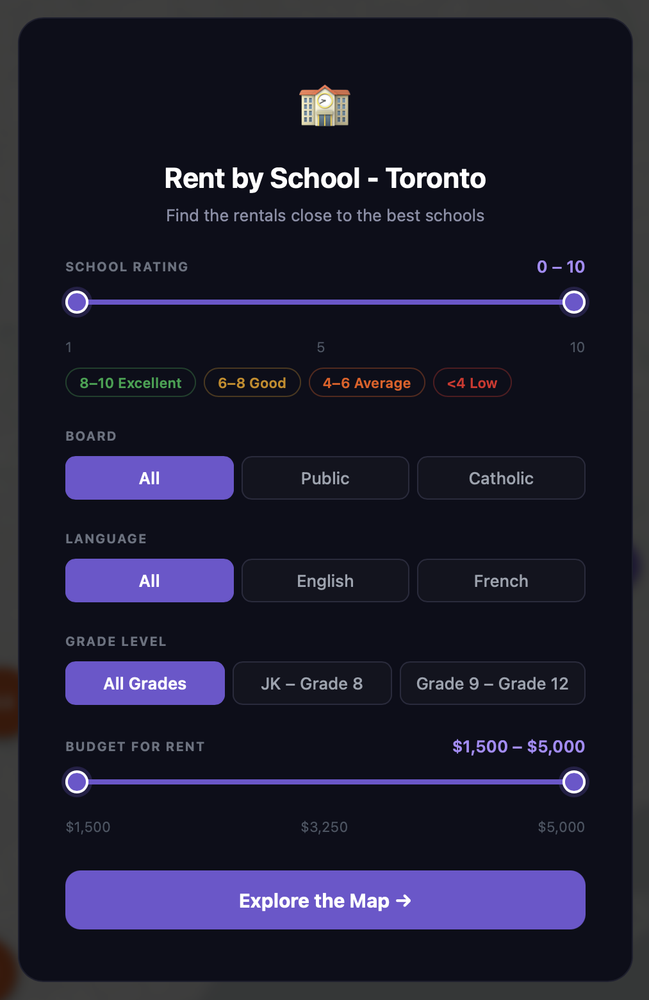
Onboarding modal - users set school rating, board, language, grade and budget before seeing the map
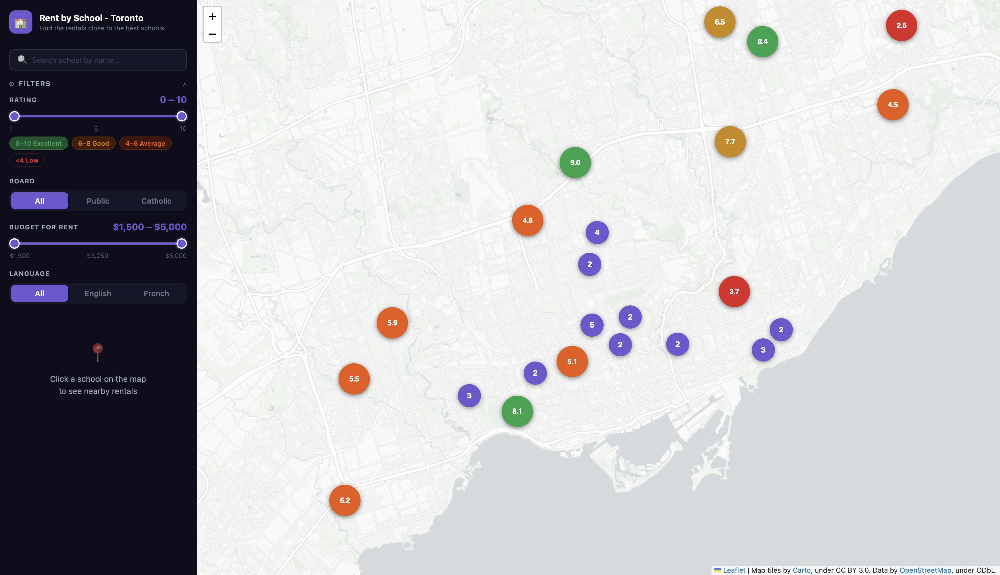
Map view after filters applied - schools shown as colour-coded pins by Fraser rating
The filter-first flow felt like an extra barrier before the real value became visible.
I conducted 4 user testing sessions with parents, showing them the prototype. Their feedback showed that parents wanted to control the search themselves - not be funnelled through a form before seeing anything.
2nd design iteration with Claude Code (current version).
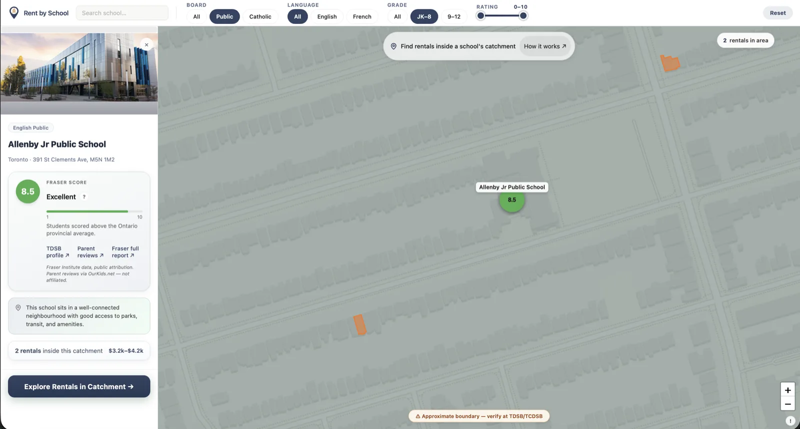
School detail panel - Fraser score, catchment highlights, and rental pins visible on the map
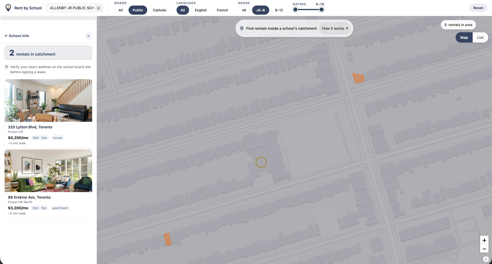
School catchment panel - rentals listed in sidebar with distance and price
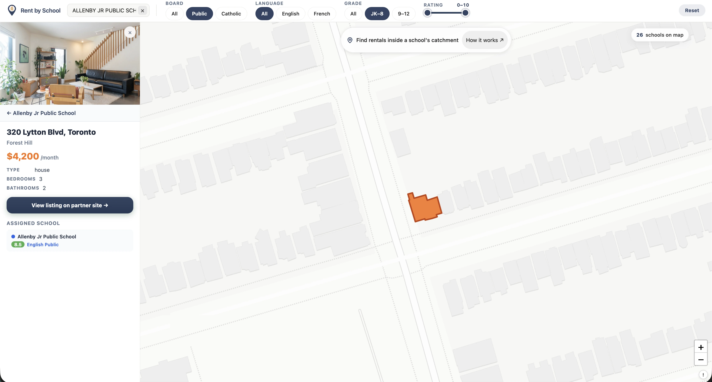
Rental detail - listing with assigned school, Fraser rating, and catchment pin
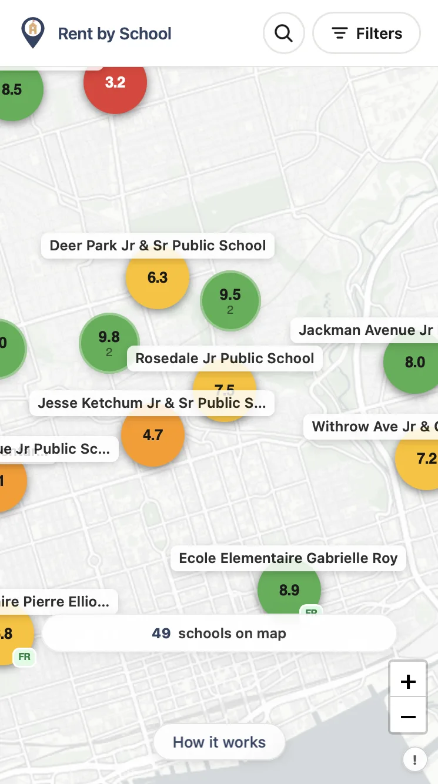
Map - colour-coded school pins with Fraser ratings
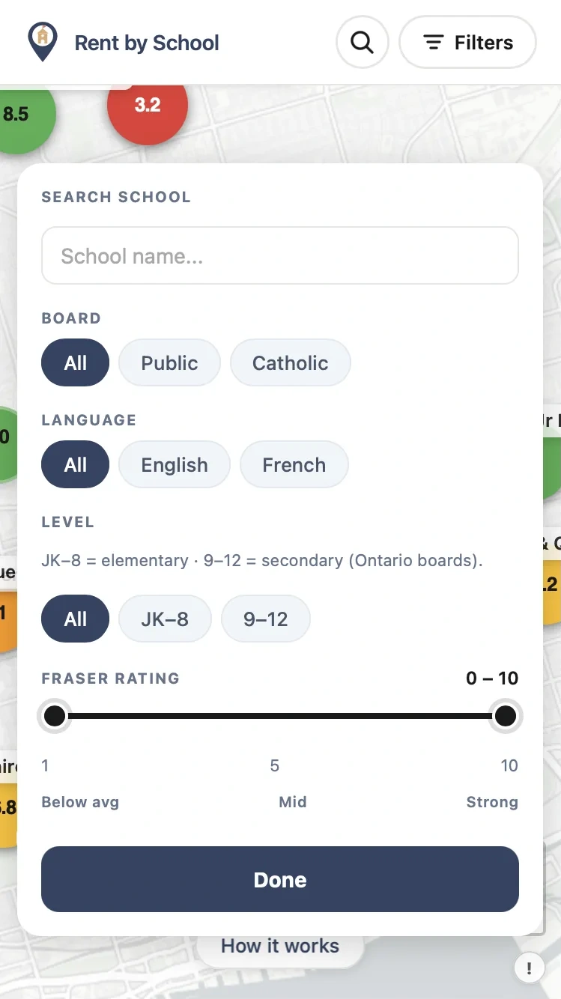
Filters - board, language, level, and rating range
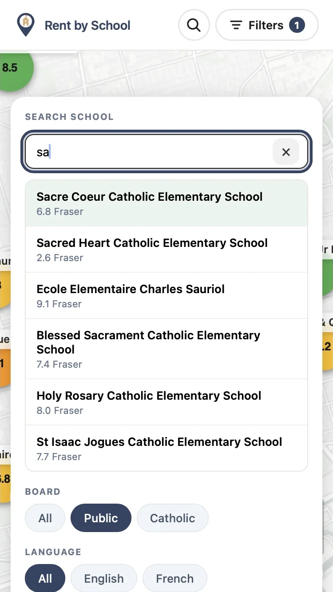
Search - autocomplete by name with ratings shown

School detail - Fraser score, tags, and neighbourhood context
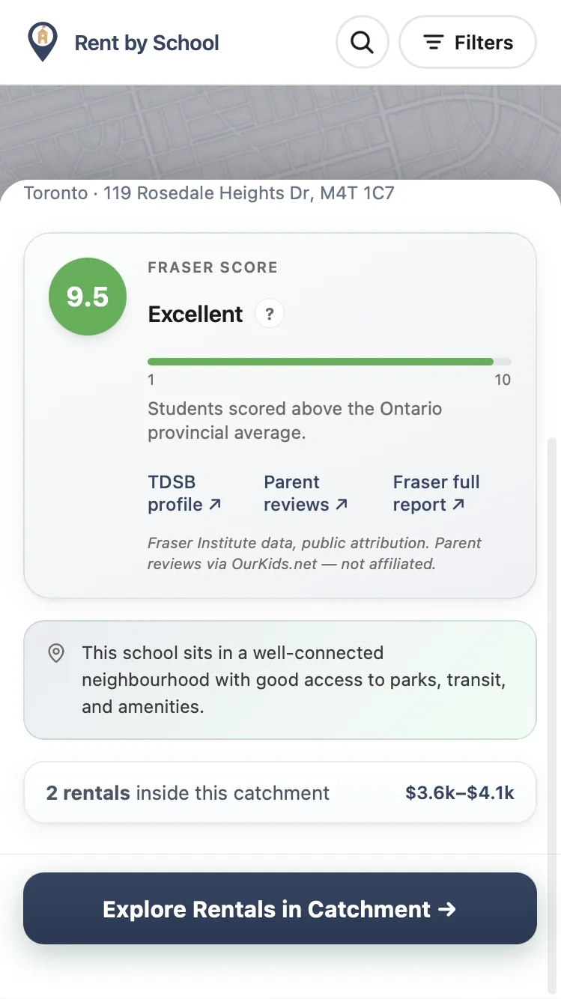
School detail - rental count and price range in catchment
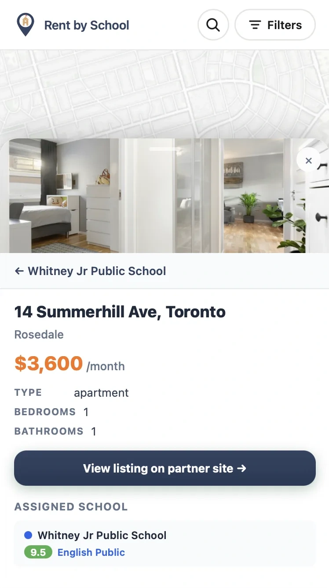
Rental detail - listing with assigned school and rating
Lower friction, faster onboarding
No saved searches; session context lost if app is closed
A relocating parent under time pressure won’t create an account for a tool they’ve never used. Trust comes before commitment. Security: no personal data collected in MVP - contact form data handled by partner/realtor only.
URL-based state management
Designed for the time-poor parent. Michelle can resume her filtered search instantly between errands - no account, no login, just a shareable link that holds her exact criteria.
Bottom-sheet architecture, one-thumb reach
The map stays the primary spatial reference while school and rental details slide up from the bottom - keeping context and detail visible at the same time, without switching screens.
Round 1 - 4 sessions with parents in a relocation phase
finding
The filter-first flow felt like a barrier. Parents wanted to explore the map themselves - not fill out a form before seeing anything
Iteration - switched to map-first interface
now testing
Map opens immediately, filters available on demand - putting control back with the user from the first second
Round 2 - planned
next
Is the "Why this score?" chip noticed at natural visibility? Does the school and rental info feel like just enough to decide?
Screen recordings of the live app - mobile and desktop.
Mobile - bottom sheet, school detail, rental explore
Desktop - map filters, catchment polygon, rental panel
The platform eliminates the "Relocator's Blindspot" through verified, contextually legible data.
Can a user find a school and its rental catchment without dropping off? Measures whether the core flow is intuitive enough to complete unprompted.
Target: school found in < 2 minOf users who find a rental listing, how many click through to apply? Tracks whether the platform generates genuine rental intent, not just exploration.
Target: > industry benchmark CTRAre users interacting with the school-quality and catchment filters, or ignoring them? High engagement signals the decision-engine is adding real value over a plain map.
Target: > 60% sessions use filtersData Modernization - Replace conceptual catchment layers with official TDSB/TCDSB Open Data feeds for zero-margin-of-error relocation decisions. Currently in early conversations with TDSB to explore access to their exact catchment boundary data.
The Contextual Lead Pipeline - Partner with Toronto realtors to transmit the user's school criteria directly into their CRM, so Michelle never has to repeat her research.
Qualitative Trust Layer - Integrate verified parent reviews to supplement Fraser's quantitative data with lived insight into school culture and extracurricular support. A number of schools aren't evaluated by Fraser at all - I'm exploring ways to build a more complete evaluation formula that fills those gaps without creating false equivalence.
A map-first rental search tool for relocating families in Toronto · 2026